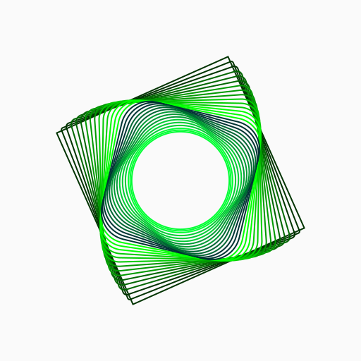
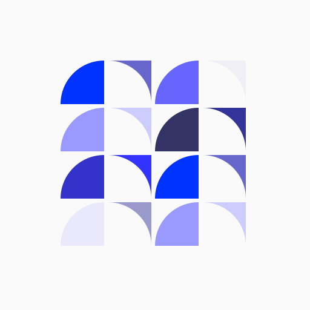
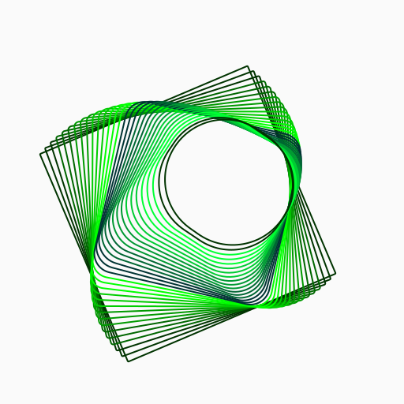
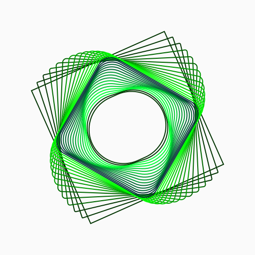
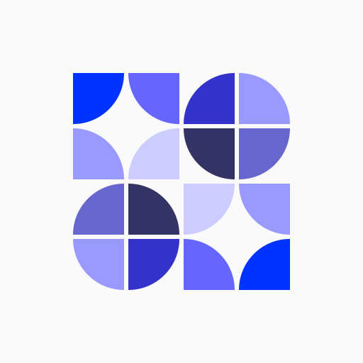
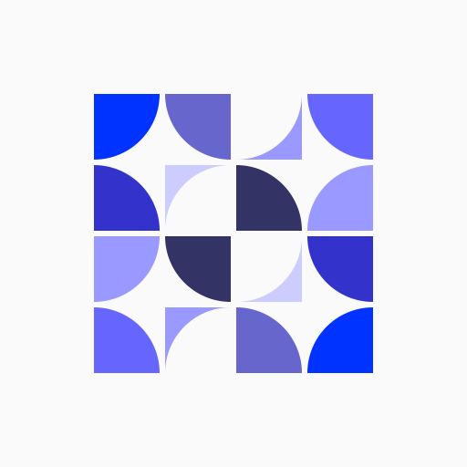

Existing reference
Tincta Morph
Fine contours, progressive rotation and a square-to-circle transformation.
Closer to the originals
A new round using Morph’s fine contours and Assembly’s quarter-circle grid. The construction stays precise; the composition changes. Existing catalog colors let us judge the artwork beside the references.

Existing reference
Fine contours, progressive rotation and a square-to-circle transformation.

Existing reference
Equal tiles, quarter-circle curves and a quiet rhythm of solid color.

The square gradually rounds and travels off-center. A drifting aperture gives the familiar contour field a different balance.

The frames rotate forward, then reverse as they contract. This creates a denser folded edge around a quiet rounded opening.

Quarter-circle tiles form two solid circular groups and two open ones. Positive and negative shapes balance across the same precise grid.

Convex and concave tiles pass a curve through the grid. Alternating solid and open cells create a more directional composition.
What to compare
A and B stay close to Morph’s delicate linework. C and D stay close to Assembly’s colored modules. Use the palette switch to see the same drawings in Tincta’s existing red and orange range.
For a profile picture
The 32, 48 and 96 px circles show each full drawing at actual CSS size. Fine contours merge as they shrink; modular shapes stay clearer. A selected contour direction would need a simplified avatar version. These are compositions to review, with no app artwork replaced or deployment performed.